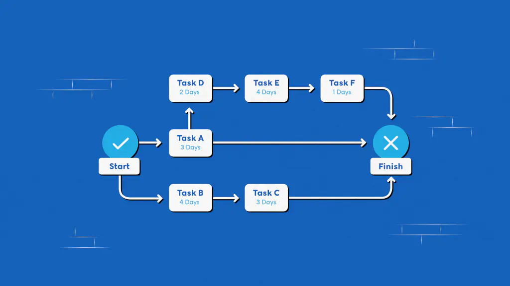

Metode jalur kritis (CPM) adalah teknik di mana Anda mengidentifikasi tugas yang diperlukan untuk penyelesaian proyek dan menentukan fleksibilitas penjadwalan. Jalur kritis dalam manajemen proyek merupakan rangkaian aktivitas terpanjang yang harus diselesaikan tepat waktu agar proyek selesai. Penundaan dalam tugas kritis akan menunda bagian lain dalam proyek. CPM fokus mencari tugas terpenting dalam linimasa proyek, mengidentifikasi dependensi tugas, dan menghitung durasi tugas.
